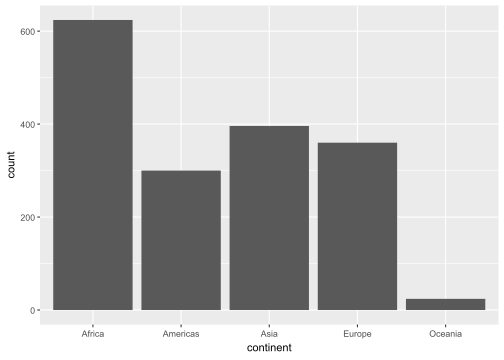
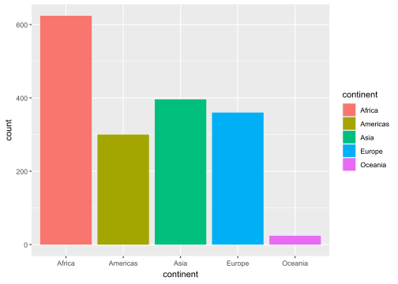
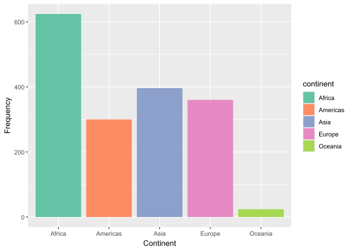
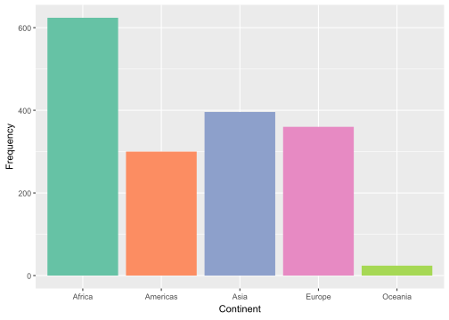
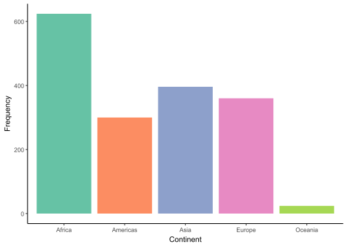

## ------------------------------
## Taller 1
##
## Autor:
##
## Fecha:
## ------------------------------
## cargamos todos los paquetes que usaremos en la sesión:
library(tidyverse)
library(gapminder)
## ---------------------------
### Ejercicio 1ggplot y tidyverse - Soluciones
Estas son las soluciones para las ejercicios en las diapositivas de ggplot y tidyverse
Ejercicio 1
Abran un R Script, y utilizando la siguiente plantilla, carguen los paquetes tidyverse y gapminder. Instálenlos desde la consola si es la primera vez que usan su PC actual.
La idea de tener esta plantilla es ayudarlos a que mantengan un orden y puedan leer su código de mejor manera.
Instalación de los paquetes
Si es la primera vez que van a usar un paquete, recuerden siempre instalarlo en el computador antes de cargarlo. ¿Cómo hacerlo? Con la función install.packages() y el nombre del paquete entre comillas. Si estos paquetes ya están instalados en su computador, pueden omitir este paso y simplemente cargarlos con library(). Mi sugerencia para instalarlos es que usen la consola para escribir:
install.packages("tidyverse")
install.packages("gapminder")Otra manera de hacerlo usando notación de vectores es:
install.packages(c("tidyverse", "gapminder"))Los paquetes se instalan una única vez por computador.
Cargar los paquetes a la sesión actual de R Studio
Luego de esto pueden cargar los paquetes con la función library(). Los paquetes se cargan siempre en una nueva sesión de R Studio:
library(tidyverse)── Attaching core tidyverse packages ──────────────────────── tidyverse 2.0.0 ──
✔ dplyr 1.1.4 ✔ readr 2.1.5
✔ forcats 1.0.0 ✔ stringr 1.5.1
✔ ggplot2 3.5.1 ✔ tibble 3.2.1
✔ lubridate 1.9.4 ✔ tidyr 1.3.1
✔ purrr 1.0.2
── Conflicts ────────────────────────────────────────── tidyverse_conflicts() ──
✖ dplyr::filter() masks stats::filter()
✖ dplyr::lag() masks stats::lag()
ℹ Use the conflicted package (<http://conflicted.r-lib.org/>) to force all conflicts to become errorslibrary(gapminder)Por otro lado, la función library() no acepta la notación vectorial. Observen el error al tratar de cargar ambos paquetes a la vez:
library(c(tidyverse,gapminder))Error in library(c(tidyverse, gapminder)): 'package' must be of length 1¿Cómo darle un vistazo a los datos?
La función glimpse() nos proporciona una vista rápida del número de filas y columnas, los nombres de las variables, sus tipos y algunos de sus valores.
glimpse(gapminder)Rows: 1,704
Columns: 6
$ country <fct> "Afghanistan", "Afghanistan", "Afghanistan", "Afghanistan", …
$ continent <fct> Asia, Asia, Asia, Asia, Asia, Asia, Asia, Asia, Asia, Asia, …
$ year <int> 1952, 1957, 1962, 1967, 1972, 1977, 1982, 1987, 1992, 1997, …
$ lifeExp <dbl> 28.801, 30.332, 31.997, 34.020, 36.088, 38.438, 39.854, 40.8…
$ pop <int> 8425333, 9240934, 10267083, 11537966, 13079460, 14880372, 12…
$ gdpPercap <dbl> 779.4453, 820.8530, 853.1007, 836.1971, 739.9811, 786.1134, …Pueden comparar glimpse(gapminder) con head(gapminder). Mientras que glimpse() nos muestra un resumen de todas las variables, head() solo nos muestra las primeras filas del dataset.
Ejercicio 2
Grafiquen las siguientes 4 gráficas usando la consola. ¿Cuál eligirían y por qué? Escriban el código de la gráfica elegida en el script y respondan a las preguntas usando comentarios precedidos por #.
ggplot(data = gapminder, aes(x = gdpPercap, y = lifeExp, color = continent)) +
geom_point()
ggplot(data = gapminder, aes(x = gdpPercap, y = lifeExp, size = continent)) +
geom_point()
ggplot(data = gapminder, aes(x = gdpPercap, y = lifeExp, shape = continent)) +
geom_point()
ggplot(data = gapminder, aes(x = gdpPercap, y = lifeExp, alpha = continent)) +
geom_point()En este ejercicio, la idea es que observen cómo cambian los atributos dentro del mapeo estético según la variable continent. Como pueden ver en los gráficos de abajo, excepto en la gráfica que cambia el atributo color, el resto no permite distinguir claramente cada continente. Quiero destacar cómo en cada gráfica la función ggplot() genera automáticamente una leyenda a la derecha, explicando cómo el atributo varía según el continente.

Acá no había respuesta correcta, sin embargo, debería aparecer en su R Script algo como esto:
### Ejercicio 2
ggplot(data = gapminder, aes(x = gdpPercap, y = lifeExp, color = continent)) +
geom_point()
# Elijo esta gráfica porque con el resto de atributos (size, shape, alpha) no es posible distinguir
# cada continenteEjercicio 3
Hagamos un gráfico de barras sencillo para visualizar la cantidad de observaciones por continente en los datos gapminder.
Punto 1
Usen geom_bar() como objeto geométrico y mapeen el eje x a continent.
ggplot(data = gapminder) +
geom_bar(aes(x=continent)) 
Punto 2
Los gráficos llenos de gris no son muy atractivos. Vamos a agregar color al gráfico mapeando el atributo fill a continent.
ggplot(data = gapminder) +
geom_bar(aes(x=continent, fill=continent)) 
Punto 3
Ahora que el gráfico tiene color, vamos a mejorar aún más su estética. Revisen la página de paletas de colores Brewer, elijan una de las paletas de colores que allí encuentran y agreguen la capa scale_fill_brewer(palette = "nombre_de_paleta").
ggplot(data = gapminder) +
geom_bar(aes(x=continent, fill=continent)) +
scale_fill_brewer(palette = "Set2") + Punto 4
Para ser más claros, modifiquen los nombres de los ejes a y = "Frequency" y x = "Continent". La diapositiva 41 tiene un ejemplo de cómo hacerlo.
Esto se realiza con la opción labs()
ggplot(data = gapminder) +
geom_bar(aes(x=continent, fill=continent)) +
scale_fill_brewer(palette = "Set2") +
labs(y = "Frequency", x = "Continent")
Punto 5
En este caso la guía de los continentes parece innecesaria. Eliminémosla agregando la capa guides(fill=FALSE).
ggplot(gapminder) +
geom_bar(aes(x=continent, fill=continent)) +
scale_fill_brewer(palette = "Set2") +
labs(x = "Continent", y = "Frequency") +
guides(fill=FALSE)
Punto 6
ggplot usa un fondo gris por defecto. Elijan entre theme_minimal() o theme_classic() como última capa.
ggplot(gapminder) +
geom_bar(aes(x=continent, fill=continent)) +
scale_fill_brewer(palette = "Set2") +
labs(x = "Continent", y = "Frequency") +
guides(fill=FALSE) +
theme_classic()
Noten cómo en la última gráfica cambié ggplot(data = gapminder) por ggplot(gapminder). La función ggplot() reconoce que su primer argumento siempre es el conjunto de datos. Además, los argumentos dentro de cada capa se separan con comas, como en geom_bar(aes(x = continent, fill = continent)) o labs(x = "Continent", y = "Frequency").
Ejercicio 4
Para los datos de gapminder, usen filter() y operadores lógicos para seleccionar:
Punto 1
Los datos para el siguiente país que quisieran visitar
gapminder |>
filter(country == "Argentina")# A tibble: 12 × 6
country continent year lifeExp pop gdpPercap
<fct> <fct> <int> <dbl> <int> <dbl>
1 Argentina Americas 1952 62.5 17876956 5911.
2 Argentina Americas 1957 64.4 19610538 6857.
3 Argentina Americas 1962 65.1 21283783 7133.
4 Argentina Americas 1967 65.6 22934225 8053.
5 Argentina Americas 1972 67.1 24779799 9443.
6 Argentina Americas 1977 68.5 26983828 10079.
7 Argentina Americas 1982 69.9 29341374 8998.
8 Argentina Americas 1987 70.8 31620918 9140.
9 Argentina Americas 1992 71.9 33958947 9308.
10 Argentina Americas 1997 73.3 36203463 10967.
11 Argentina Americas 2002 74.3 38331121 8798.
12 Argentina Americas 2007 75.3 40301927 12779.En este punto podrían utilizar la función View(gapminder) para buscar el país que les llamara la atención.
Punto 2
¿Por qué ese país?
# Acá valía cualquier cosa. Ejemplo: Me encanta el fútbol!Punto 3
Todos los datos en el año 2007 y para el continente del país en los puntos anteriores
gapminder |>
filter(year == 2007,
continent == "Americas")# A tibble: 25 × 6
country continent year lifeExp pop gdpPercap
<fct> <fct> <int> <dbl> <int> <dbl>
1 Argentina Americas 2007 75.3 40301927 12779.
2 Bolivia Americas 2007 65.6 9119152 3822.
3 Brazil Americas 2007 72.4 190010647 9066.
4 Canada Americas 2007 80.7 33390141 36319.
5 Chile Americas 2007 78.6 16284741 13172.
6 Colombia Americas 2007 72.9 44227550 7007.
7 Costa Rica Americas 2007 78.8 4133884 9645.
8 Cuba Americas 2007 78.3 11416987 8948.
9 Dominican Republic Americas 2007 72.2 9319622 6025.
10 Ecuador Americas 2007 75.0 13755680 6873.
# ℹ 15 more rowsPunto 4
Filas donde la expectativa de vida sea mayor a 82 en el año 2007 y que no sean Oceanía
gapminder |>
filter(year == 2007,
lifeExp > 82,
continent != "Oceania")# A tibble: 2 × 6
country continent year lifeExp pop gdpPercap
<fct> <fct> <int> <dbl> <int> <dbl>
1 Hong Kong, China Asia 2007 82.2 6980412 39725.
2 Japan Asia 2007 82.6 127467972 31656.Al igual que en ggplot(), los argumentos dentro de los verbos del paquete dplyr van separados por comas. Es importante notar cómo el código se vuelve más legible cuando cada argumento se coloca en una línea distinta, en lugar de escribir todo en una sola línea. Por ejemplo, el siguiente código es más difícil de leer que el anterior:
gapminder |> filter(year == 2007, lifeExp > 82, continent != "Oceania")Ejercicio 5
Punto 1
¿Cuál es la expectativa de vida más baja en gapminder? ¿Qué país la tiene y en qué año?
gapminder |>
arrange(lifeExp)# A tibble: 1,704 × 6
country continent year lifeExp pop gdpPercap
<fct> <fct> <int> <dbl> <int> <dbl>
1 Rwanda Africa 1992 23.6 7290203 737.
2 Afghanistan Asia 1952 28.8 8425333 779.
3 Gambia Africa 1952 30 284320 485.
4 Angola Africa 1952 30.0 4232095 3521.
5 Sierra Leone Africa 1952 30.3 2143249 880.
6 Afghanistan Asia 1957 30.3 9240934 821.
7 Cambodia Asia 1977 31.2 6978607 525.
8 Mozambique Africa 1952 31.3 6446316 469.
9 Sierra Leone Africa 1957 31.6 2295678 1004.
10 Burkina Faso Africa 1952 32.0 4469979 543.
# ℹ 1,694 more rowsLa expectativa más baja en todo el conjunto de datos la tiene Rwanda en 1992.
Punto 2
¿Cuál es la expectativa de vida más alta en gapminder? ¿Qué país la tiene y en qué año?
Acá usamos la opción desc() de la función para cambiar el orden de mayor a menor.
gapminder |>
arrange(desc(lifeExp))# A tibble: 1,704 × 6
country continent year lifeExp pop gdpPercap
<fct> <fct> <int> <dbl> <int> <dbl>
1 Japan Asia 2007 82.6 127467972 31656.
2 Hong Kong, China Asia 2007 82.2 6980412 39725.
3 Japan Asia 2002 82 127065841 28605.
4 Iceland Europe 2007 81.8 301931 36181.
5 Switzerland Europe 2007 81.7 7554661 37506.
6 Hong Kong, China Asia 2002 81.5 6762476 30209.
7 Australia Oceania 2007 81.2 20434176 34435.
8 Spain Europe 2007 80.9 40448191 28821.
9 Sweden Europe 2007 80.9 9031088 33860.
10 Israel Asia 2007 80.7 6426679 25523.
# ℹ 1,694 more rowsLa expectativa más alta en todo el conjunto de datos la tiene Japón en 2007.
Ejercicio 6
Punto 1
Seleccionen solo las columnas year, lifeExp y country en gapminder
gapminder |>
select(year, lifeExp, country)# A tibble: 1,704 × 3
year lifeExp country
<int> <dbl> <fct>
1 1952 28.8 Afghanistan
2 1957 30.3 Afghanistan
3 1962 32.0 Afghanistan
4 1967 34.0 Afghanistan
5 1972 36.1 Afghanistan
6 1977 38.4 Afghanistan
7 1982 39.9 Afghanistan
8 1987 40.8 Afghanistan
9 1992 41.7 Afghanistan
10 1997 41.8 Afghanistan
# ℹ 1,694 more rowsNuevamente, los argumentos van separados por comas.
Punto 2
Seleccionen todas las columnas excepto year, lifeExp y country en gapminder
Recuerden que el signo - se usa para descartar variables en select(). Como en muchos otros casos, hay varias maneras de hacerlo. Por ejemplo:
gapminder |>
select(-year, -lifeExp, -country)# A tibble: 1,704 × 3
continent pop gdpPercap
<fct> <int> <dbl>
1 Asia 8425333 779.
2 Asia 9240934 821.
3 Asia 10267083 853.
4 Asia 11537966 836.
5 Asia 13079460 740.
6 Asia 14880372 786.
7 Asia 12881816 978.
8 Asia 13867957 852.
9 Asia 16317921 649.
10 Asia 22227415 635.
# ℹ 1,694 more rowsOtra alternativa es usar notación de vectores:
gapminder |>
select(-c(year, lifeExp, country))# A tibble: 1,704 × 3
continent pop gdpPercap
<fct> <int> <dbl>
1 Asia 8425333 779.
2 Asia 9240934 821.
3 Asia 10267083 853.
4 Asia 11537966 836.
5 Asia 13079460 740.
6 Asia 14880372 786.
7 Asia 12881816 978.
8 Asia 13867957 852.
9 Asia 16317921 649.
10 Asia 22227415 635.
# ℹ 1,694 more rowsEjercicio 7
Punto 1
Creen una variable llamada africa que sea TRUE si el país está en el continente africano
En , la expresión continent == "Africa" evalúa si cada elemento de la variable continent es igual a "Africa". Esto genera un vector lógico (de valores TRUE o FALSE) del mismo tamaño que la columna continent. Luego, mutate() agrega este vector como una nueva variable llamada africa en el dataset gapminder.
gapminder |>
mutate(africa = continent =="Africa")# A tibble: 1,704 × 7
country continent year lifeExp pop gdpPercap africa
<fct> <fct> <int> <dbl> <int> <dbl> <lgl>
1 Afghanistan Asia 1952 28.8 8425333 779. FALSE
2 Afghanistan Asia 1957 30.3 9240934 821. FALSE
3 Afghanistan Asia 1962 32.0 10267083 853. FALSE
4 Afghanistan Asia 1967 34.0 11537966 836. FALSE
5 Afghanistan Asia 1972 36.1 13079460 740. FALSE
6 Afghanistan Asia 1977 38.4 14880372 786. FALSE
7 Afghanistan Asia 1982 39.9 12881816 978. FALSE
8 Afghanistan Asia 1987 40.8 13867957 852. FALSE
9 Afghanistan Asia 1992 41.7 16317921 649. FALSE
10 Afghanistan Asia 1997 41.8 22227415 635. FALSE
# ℹ 1,694 more rowsPunto 2
Agreguen una columna que sea el logaritmo del GDP per cápita (Pista: usen la función log())
El nombre de la nueva variable es libre. En este caso, la llamaremos log_gdp:
gapminder |>
mutate(log_gdp = log(gdpPercap))# A tibble: 1,704 × 7
country continent year lifeExp pop gdpPercap log_gdp
<fct> <fct> <int> <dbl> <int> <dbl> <dbl>
1 Afghanistan Asia 1952 28.8 8425333 779. 6.66
2 Afghanistan Asia 1957 30.3 9240934 821. 6.71
3 Afghanistan Asia 1962 32.0 10267083 853. 6.75
4 Afghanistan Asia 1967 34.0 11537966 836. 6.73
5 Afghanistan Asia 1972 36.1 13079460 740. 6.61
6 Afghanistan Asia 1977 38.4 14880372 786. 6.67
7 Afghanistan Asia 1982 39.9 12881816 978. 6.89
8 Afghanistan Asia 1987 40.8 13867957 852. 6.75
9 Afghanistan Asia 1992 41.7 16317921 649. 6.48
10 Afghanistan Asia 1997 41.8 22227415 635. 6.45
# ℹ 1,694 more rowsPunto 3
Conviertan la expectativa de vida de años a meses
Aquí no se crea una nueva variable, sino que se modifica lifeExp, que ya existe en los datos:
gapminder |>
mutate(lifeExp = lifeExp * 12)# A tibble: 1,704 × 6
country continent year lifeExp pop gdpPercap
<fct> <fct> <int> <dbl> <int> <dbl>
1 Afghanistan Asia 1952 346. 8425333 779.
2 Afghanistan Asia 1957 364. 9240934 821.
3 Afghanistan Asia 1962 384. 10267083 853.
4 Afghanistan Asia 1967 408. 11537966 836.
5 Afghanistan Asia 1972 433. 13079460 740.
6 Afghanistan Asia 1977 461. 14880372 786.
7 Afghanistan Asia 1982 478. 12881816 978.
8 Afghanistan Asia 1987 490. 13867957 852.
9 Afghanistan Asia 1992 500. 16317921 649.
10 Afghanistan Asia 1997 501. 22227415 635.
# ℹ 1,694 more rowsNota: Todo esto se podía hacer dentro de una sola llamada a mutate():
gapminder |>
mutate(africa = continent == "Africa",
log_gdp = log(gdpPercap),
lifeExp = lifeExp * 12)# A tibble: 1,704 × 8
country continent year lifeExp pop gdpPercap africa log_gdp
<fct> <fct> <int> <dbl> <int> <dbl> <lgl> <dbl>
1 Afghanistan Asia 1952 346. 8425333 779. FALSE 6.66
2 Afghanistan Asia 1957 364. 9240934 821. FALSE 6.71
3 Afghanistan Asia 1962 384. 10267083 853. FALSE 6.75
4 Afghanistan Asia 1967 408. 11537966 836. FALSE 6.73
5 Afghanistan Asia 1972 433. 13079460 740. FALSE 6.61
6 Afghanistan Asia 1977 461. 14880372 786. FALSE 6.67
7 Afghanistan Asia 1982 478. 12881816 978. FALSE 6.89
8 Afghanistan Asia 1987 490. 13867957 852. FALSE 6.75
9 Afghanistan Asia 1992 500. 16317921 649. FALSE 6.48
10 Afghanistan Asia 1997 501. 22227415 635. FALSE 6.45
# ℹ 1,694 more rowsEjercicio 8
Punto 1
Calculen el GDP per cápita promedio en 1977 para cada continente
¿Cómo pensar este procedimiento desde el uso del operador pipe?
Lo primero es seleccionar las observaciones para el año 1977 con la función filter() de la siguiente manera:
gapminder |>
filter(year == 1977)# A tibble: 142 × 6
country continent year lifeExp pop gdpPercap
<fct> <fct> <int> <dbl> <int> <dbl>
1 Afghanistan Asia 1977 38.4 14880372 786.
2 Albania Europe 1977 68.9 2509048 3533.
3 Algeria Africa 1977 58.0 17152804 4910.
4 Angola Africa 1977 39.5 6162675 3009.
5 Argentina Americas 1977 68.5 26983828 10079.
6 Australia Oceania 1977 73.5 14074100 18334.
7 Austria Europe 1977 72.2 7568430 19749.
8 Bahrain Asia 1977 65.6 297410 19340.
9 Bangladesh Asia 1977 46.9 80428306 660.
10 Belgium Europe 1977 72.8 9821800 19118.
# ℹ 132 more rowsLo segundo es agrupar por la variable continent con la función group_by:
gapminder |>
filter(year == 1977) |>
group_by(continent)# A tibble: 142 × 6
# Groups: continent [5]
country continent year lifeExp pop gdpPercap
<fct> <fct> <int> <dbl> <int> <dbl>
1 Afghanistan Asia 1977 38.4 14880372 786.
2 Albania Europe 1977 68.9 2509048 3533.
3 Algeria Africa 1977 58.0 17152804 4910.
4 Angola Africa 1977 39.5 6162675 3009.
5 Argentina Americas 1977 68.5 26983828 10079.
6 Australia Oceania 1977 73.5 14074100 18334.
7 Austria Europe 1977 72.2 7568430 19749.
8 Bahrain Asia 1977 65.6 297410 19340.
9 Bangladesh Asia 1977 46.9 80428306 660.
10 Belgium Europe 1977 72.8 9821800 19118.
# ℹ 132 more rowsNoten que en este punto, no realiza ninguna modificación por continente, ya que aún no le hemos dicho qué hacer con esa agrupación. El siguiente proceso complementa el uso de group_by.
Finalmente, usamos la función summarise() para calcular el GDP per cápita promedio. En este caso le di el nombre de gdp_mean a la nueva variable. Es útil recordar brevemente que na.rm = TRUE ignora los valores faltantes en la columna, lo cual puede ser crucial si los datos contienen valores NA.
gapminder |>
filter(year == 1977) |>
group_by(continent) |>
summarise(gdp_mean = mean(gdpPercap, na.rm = TRUE))# A tibble: 5 × 2
continent gdp_mean
<fct> <dbl>
1 Africa 2586.
2 Americas 7352.
3 Asia 7791.
4 Europe 14284.
5 Oceania 17284.Punto 2
¿Por qué el siguiente código no funciona? ¿Cómo lo pueden arreglar?
gapminder |>
summarize(meanLifeExp = mean(lifeExp)) |>
group_by(year)En el código anterior, el orden de las operaciones es incorrecto. Primero debemos agrupar los datos por year antes de calcular la media, ya que summarize() reduce el número de filas y, una vez aplicado, no podemos agrupar los datos después. La manera correcta es la siguiente:
gapminder |>
group_by(year) |>
summarize(meanLifeExp = mean(lifeExp))# A tibble: 12 × 2
year meanLifeExp
<int> <dbl>
1 1952 49.1
2 1957 51.5
3 1962 53.6
4 1967 55.7
5 1972 57.6
6 1977 59.6
7 1982 61.5
8 1987 63.2
9 1992 64.2
10 1997 65.0
11 2002 65.7
12 2007 67.0